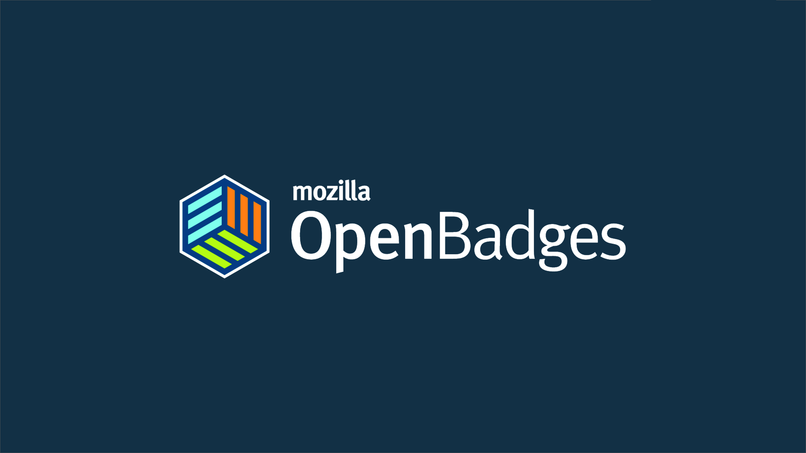
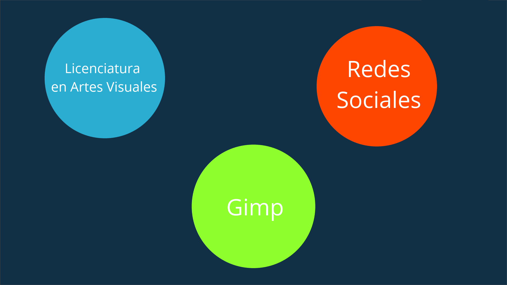
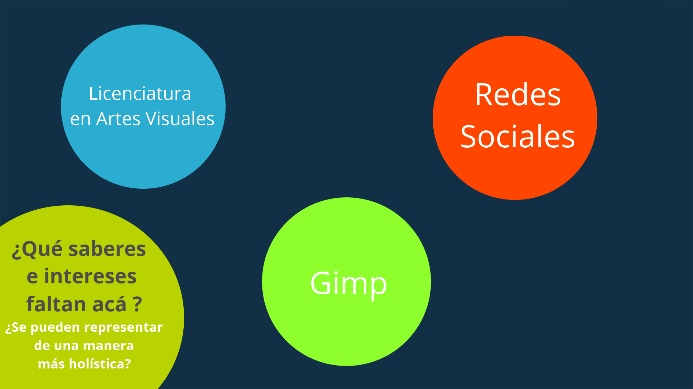
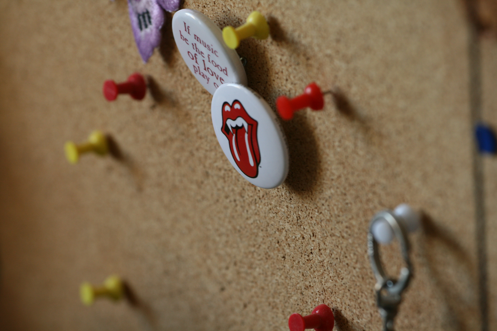

{Alvar Maciel}, {Grupo de Trabajo de Software Libre - Agenda Digital}, {CABA}, {25 de Abril 2014}


¿Que tal si usamos insignias para los aprendizajes?
Hablemos un poco de de las palabras
Imagen de JD Hancock
¿Para que usamos las insignias o distintivos?

Imagen de Wlodi
¿Para que usamos las insignias o distintivos?
Imagen de TaymTaym
¿Y si las usamos para certificar conocimientos?

Los Badges/Insignias representan logros visuales de logros, aprendizajes, saberes, intereses y prácticas
Saberes duros y blandos
evaluaciones entre pares
y complementar la formación continua
a través de una infraestructura de insignias compartidas:
Construyendo un estándar universal
Algunos emisores de Open Badges